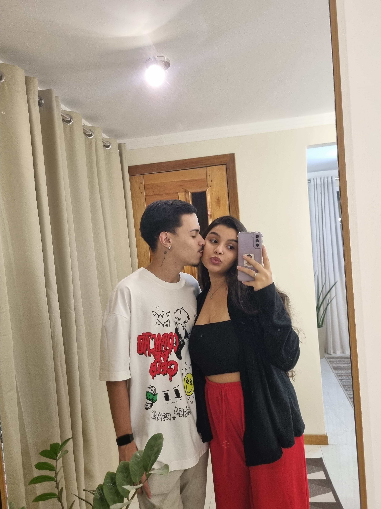
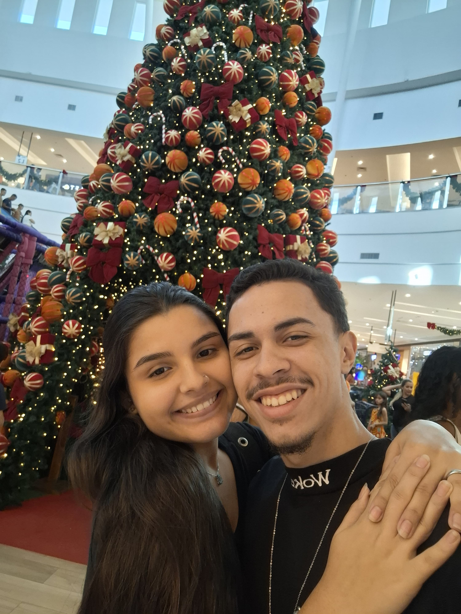
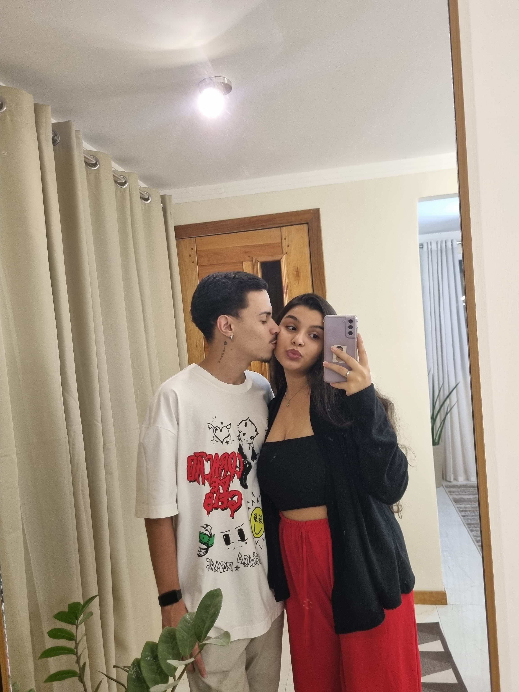
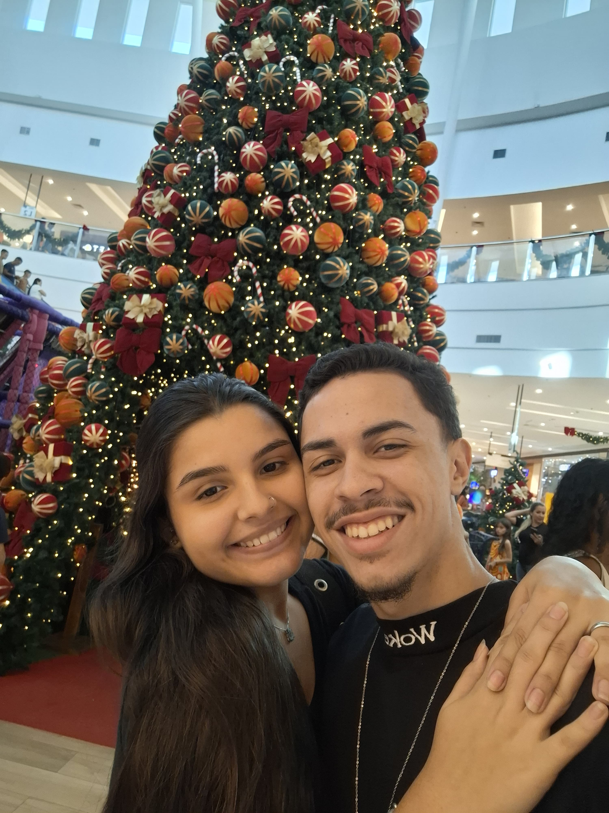
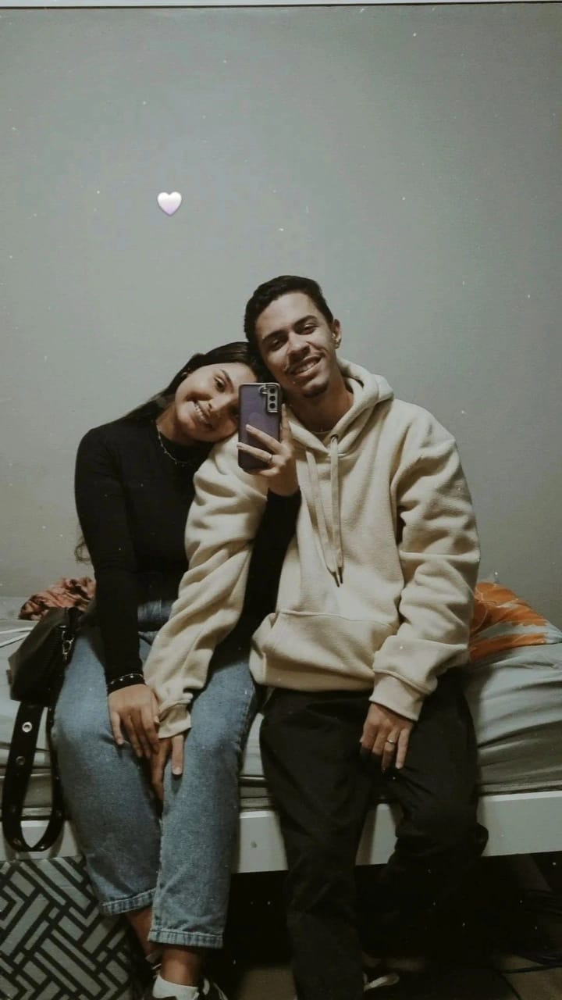
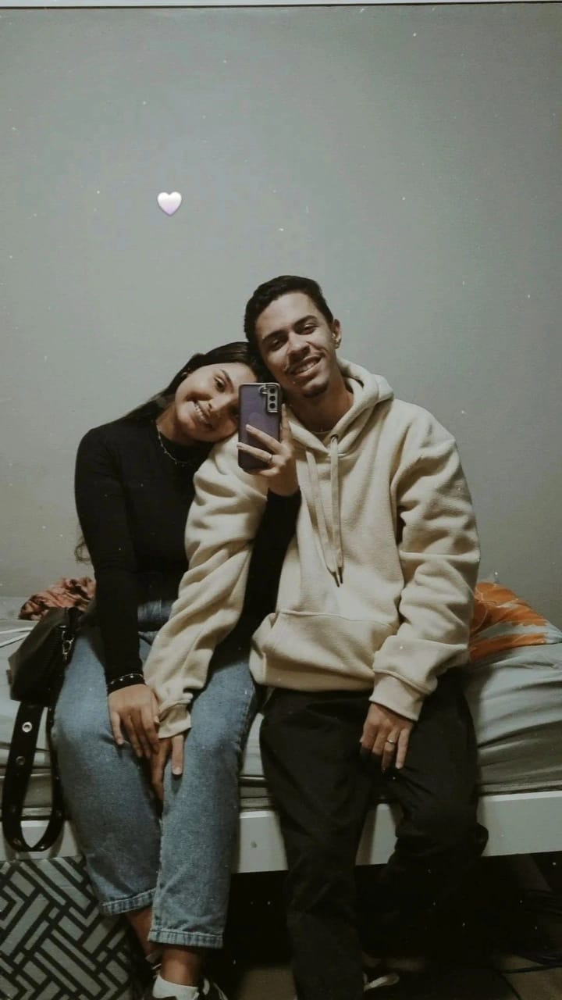

 


Uma Mensagem de Carinho pro meu zi
Meu amor, você noção da minha felicidade de estar vivendo esse dia de hoje, olhar para trás e observar o quanto evoluímos e crescemos juntos. Chegamos em uma data que para mim é expressiva, são 5 anos de amizade, carinho, admiração, respeito, união e muito, muito amor! Ter você ao meu lado é certeza de dias bons, leves, com todas nossas bobeiras e implicâncias, que é tudo que mais amamos. Completar 5 anos contigo é incrível, e se esses 5 anos foram assim, tenho certeza que quero viver 10, 20, 50... A vida toda com você, feliz por ter te achado cedo, assim passarei praticamente minha vida toda ao seu lado. É incrível ver a mulher que se tornou, determinada, sabe o que quer, sonha grande, tenho grande admiração nisso. Eu te amo muito minha gata, obrigado por todo esse amor de sempre❤